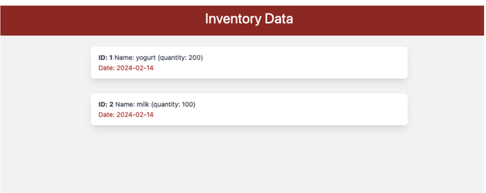
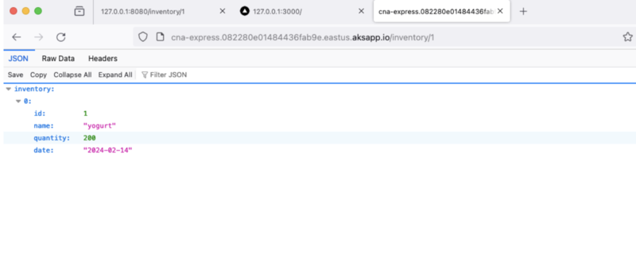

CLOUD NATIVE INVENTORY MANAGEMENT


The cloud-native inventory application is designed to streamline and optimize inventory management processes, particularly focused on the grocery industry. It comprises two main microservices: a Node.js/Express.js backend service and a Next.js front-end web service. The application's primary objective is to efficiently organize and monitor grocery inventory levels in real-time, facilitating smooth operations for businesses.
Technology Stack Used:
- Frontend:Next.js
- Backend: Node.js/Express.js
- Database: Amazon RDS for PostgreSQL datastore
- Deployment : Docker, AWS (Amazon Web Services)- AEKS, ECR & ALB.
- Developed a cloud-native inventory application with two microservices - a Node.js/Express.js backend service and a Next.js front-end web service - aimed at organizing and monitoring grocery inventory levels.
- The application focused on enhancing data retrieval speed by 40% through optimized ORM (Sequelize and Prisma) usage to interface the microservices with Amazon Relational Database Service (RDS) PostgreSQL datastore.